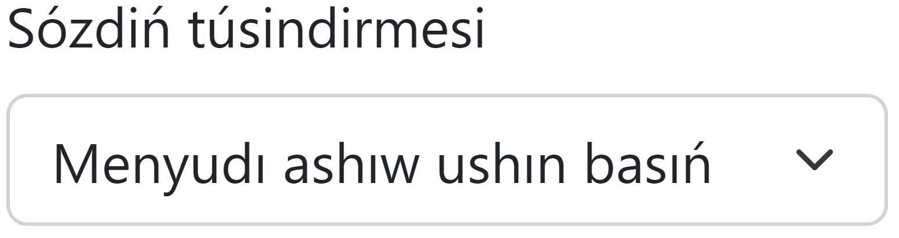

Bul sayt Túrk tilindegi sózlerdiń awdarmasın maǵlıwmatlar bazasına kiritiw ishın jaratıldı.
Sózlerdi kiritiw ushın birinshi kiritiw maydanına túrkshe sózdi, ekinshisine sol sózdiń qaraqalpaqsha awdarması jazıladı.
Keyininen, tańlaw menyusınan  sol sózge túsindirme beriledi.
Soń, Jiberiw túymesi basıladı.